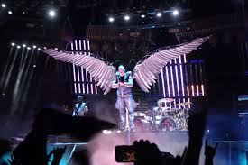
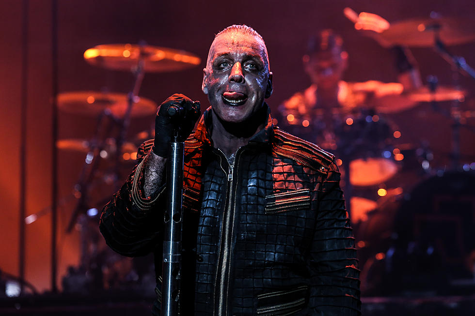
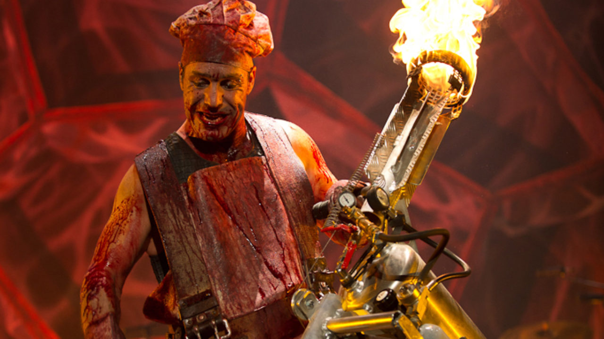

Reseña
El nombre del grupo está inspirado en la ciudad alemana Ramstein, en cuya base aérea sucedió un accidente en 1988 durante un espectáculo, en el que se vieron implicadas tres aeronaves de la escuadrilla acrobática italiana Frecce Tricolori. Dos de ellas chocaron en el aire y otra cayó sobre el público, provocando más de setenta víctimas. En el nombre se repite la «m», de forma que incluye la raíz del verbo rammen ('chocar, hundir') junto al sustantivo Stein ('piedra'); una traducción aproximada de «Rammstein» sería por lo tanto «piedra de choque». Aunque la banda ha tratado a lo largo de su carrera de negar una relación entre su nombre y dicha catástrofe, justo después de fundarse actuaron varias ocasiones bajo el nombre Rammstein-Flugschau ('Espectáculo aéreo de Rammstein')
Discografia
- Herzeleid (1995)
- Sehnsucht (1997)
- Mutter (2001)
- Reise, Reise (2004)
- Rosenrot (2005)
- Liebe ist für alle da (2009)
- Rammstein (2019)
Sitio Web
Visita al sitio WebGaleria de imagenes
|  |  |  |